01 / Business questions
What sits behind an empty slot?
Coming from medicine, I wanted to understand which appointment patterns could guide practical healthcare investigation. The analysis uses public healthcare appointment data from Brazil, obtained from the Medical Appointment No Shows dataset on Kaggle ↗.
After cleaning, 110,521 rows remained. Each row represents an appointment, not a unique patient.
This analysis aims to answer the following business questions:
- What is the overall medical appointment no-show rate?
- Does the time between scheduling and the appointment affect attendance?
- Does the appointment day influence no-show behaviour?
- Which age groups have higher observed no-show rates?
- Is there an association between SMS reminders and appointment attendance?
- Which neighbourhoods have relatively higher no-show rates?
- Does previous appointment behaviour relate to future no-shows?
- Are patients with chronic conditions more or less likely to miss appointments?
I also compared disability and scholarship status, and created exploratory appointment risk tiers.
02 / Overall attendance
One in five was a no-show.
Among the 110,521 appointments remaining after cleaning, 20.19% were recorded as missed. This baseline helped me compare attendance across groups.
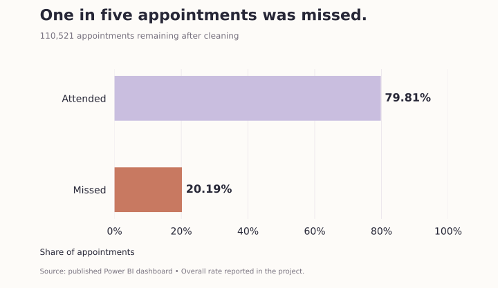
03 / Booking lead time
The waiting gap matters.
Lead time is the number of days between booking and the scheduled appointment. The average was 10.18 days. Appointments booked 8 or more days ahead had the highest observed no-show rate, approximately 32%; same-day appointments had the lowest, approximately 5%.
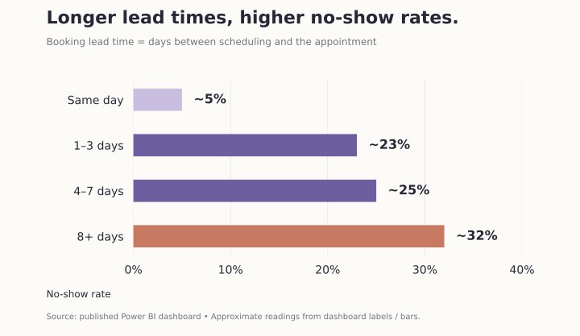
Could confirmation or follow-up processes help appointments booked far ahead? The association provides a starting point; it does not establish the effect of shortening lead time.
04 / Appointment day
Saturday stood out.
Saturday had the highest observed rate at approximately 23%, followed by Friday and Monday at approximately 21%. Sunday does not appear in the data. The clinic may not have operated on Sundays, but this cannot be confirmed from the chart alone.
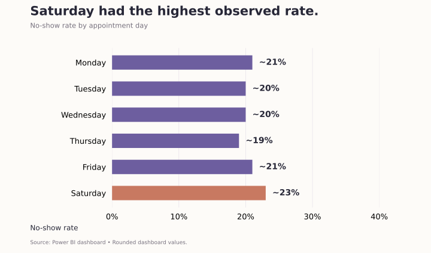
05 / Age groups
Teenagers missed appointments most often.
The 13–19 age group had the highest no-show rate, 25.95%. Seniors aged 60+ had the lowest, 15.31%.
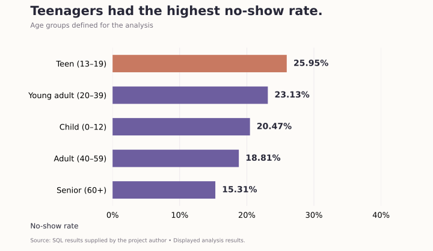
06 / Patient characteristics
Health status adds another layer.
Chronic and non-chronic conditions
I classified patients with recorded diabetes or hypertension as chronic. The non-chronic group had a higher observed no-show rate, approximately 21%, compared with approximately 17% in the chronic group.
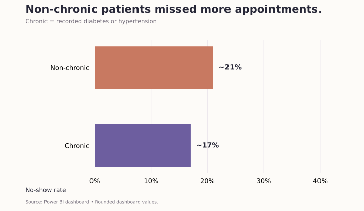
Recorded disability status
I also compared patients with and without recorded disability. The group without recorded disability had a higher observed rate, approximately 20%, compared with approximately 18% for those with recorded disability.
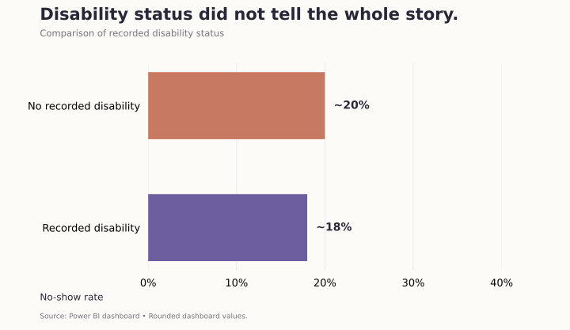
Scholarship status
Patients with recorded scholarship support had an observed rate of approximately 24%, versus approximately 20% without scholarship support.
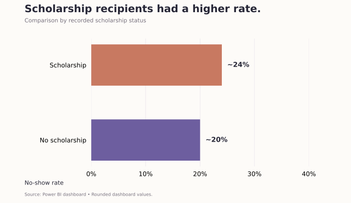
07 / Neighbourhood patterns
Which areas had higher no-show rates?
I limited comparisons to neighbourhoods with at least 100 appointments, consistent with the SQL filter. Among the top 15, Santos Dumont had the highest observed rate, approximately 29%.
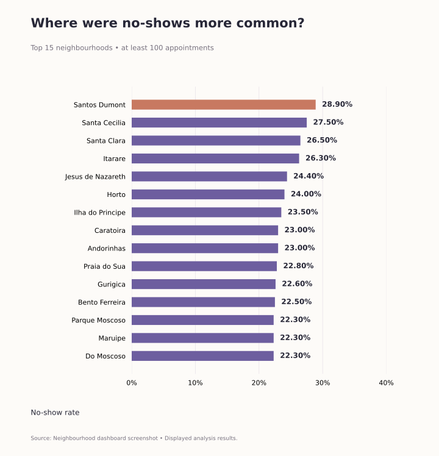
08 / SMS reminders
A reminder is only part of the story.
The SMS group had a higher observed no-show rate than the non-SMS group. This should not be interpreted as evidence that reminders are unimportant.
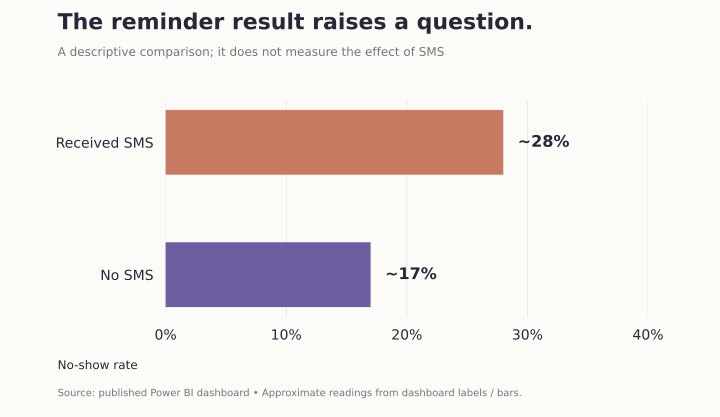
In the project interpretation, reminders were associated with appointments booked more than one day ahead, while same-day appointments did not receive SMS. This could affect the overall comparison. Lead-time-specific SMS counts would be needed to validate this pattern and compare similar groups.
09 / Attendance history & risk tiers
History and lead time inform exploratory tiers.
I used previous appointment counts, previous missed appointments, and booking lead time to create rule-based appointment segments. The rules are evaluated in the order shown:
| Tier | Rule |
|---|---|
| New patient – monitor | No previous appointments in the dataset. |
| High risk | Prior no-show rate ≥50% OR lead time ≥8 days. |
| Medium risk | Prior no-show rate ≥20% OR lead time 4–7 days, if not already assigned above. |
| Low risk | All remaining appointments. |
The largest segment was new patient – monitor (56.37%), followed by high risk (20.08%).
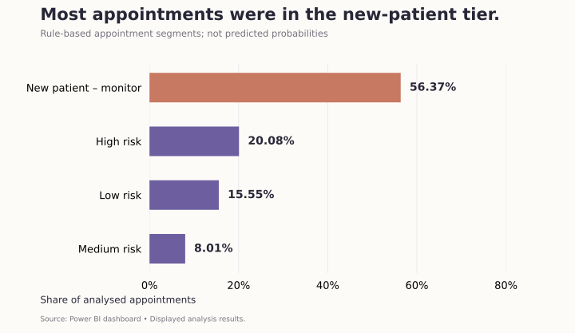
These tiers have not been validated as a prediction model. The history calculation also needs careful handling of appointments on the same date before all records can be treated as strictly prior attendance.
10 / The dashboard
The wider analysis in one report.
I used MySQL, Power Query, Power BI, DAX, and GitHub for preparation, analysis, reporting, and documentation. The Power BI report combines the findings with a date filter.
How the data was prepared
In MySQL, I standardised column names and date formats, removed records with age −1 or negative lead time, and calculated booking lead-time days and age groups. SQL aggregations supported group comparisons, while window functions and a reusable view supported attendance-history analysis.
Power Query supported preparation for reporting, DAX supplied KPI calculations, and GitHub held the SQL and project documentation.
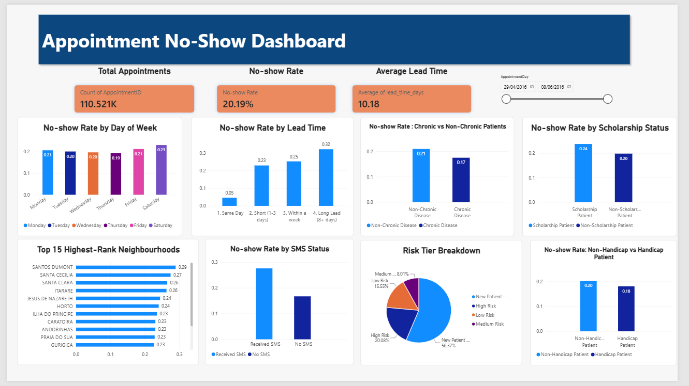
11 / Business recommendations
Where the findings could guide action.
Based on the observed patterns, these areas could be considered for further operational investigation:
These are recommendations for investigation. No reduction in no-shows or operational savings was measured.
12 / Conclusion
Patterns to investigate,
not causal explanations.
Rather than treating these patterns as causal relationships, the project uses them to identify potential areas for operational investigation and further analysis.
Sources & limitations
Sources: the Kaggle dataset, project README and SQL script, published dashboard, and analysis screenshots provided by the project author. Rates labelled approximate use rounded chart values or bar readings. Age and tier rates use the supplied numerical results.
This observational dataset does not capture every barrier to attendance. Explanations involving medication needs, clinic opening days, or reminder targeting are interpretations requiring further validation. Rule-based risk tiers are exploratory, and same-date history ordering needs refinement.
The two supporting images are AI-generated conceptual illustrations. They do not depict actual study patients or clinics.
MySQL · Power Query · Power BI · DAX · GitHub
Find the pattern.
Question the explanation.
A healthcare perspective, documented SQL analysis, and clear data storytelling.
Explore the full project ↗